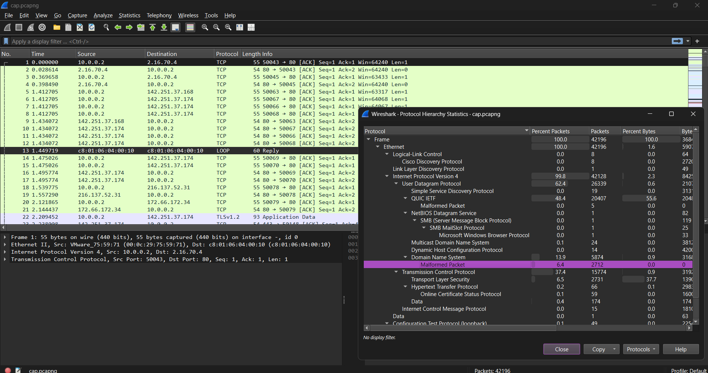
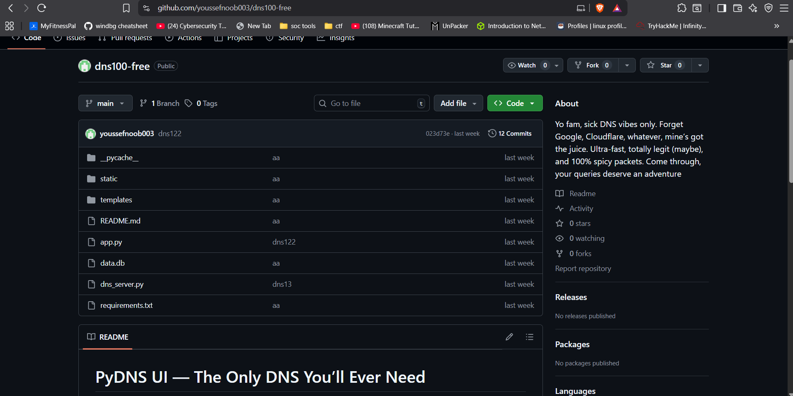

Challenge Scenario
Description: A victim machine has been compromised with ransomware. The attack used DNS as a covert channel to deliver the malicious payload. Your task is to analyze network traffic and filesystem artifacts to reconstruct the attack, recover the malware, reverse engineer it, and decrypt the victim's files.
- Network packet capture (PCAP)
- Home directory dump from victim machine
- Encrypted flag file (
sillyflag.png)
Objectives:
- Analyze packet capture for suspicious DNS traffic
- Reconstruct malware from DNS exfiltration
- Reverse engineer the ransomware encryption mechanism
- Decrypt the victim's encrypted files and retrieve the flag
Network Traffic Analysis
🔍 Step 1: Initial PCAP Examination
Opening the packet capture in Wireshark reveals thousands of packets. The protocol hierarchy shows something immediately suspicious:
Filtering for DNS traffic reveals queries to a suspicious domain: meow
The DNS labels appear to contain Base32-encoded data with index numbers, suggesting chunked data transmission.
📁 Step 2: Filesystem Artifact Analysis
Examining the victim's home directory dump reveals several interesting artifacts:
Desktop Contents:
sillyflag.png- An encrypted file (our target)IMPORTANT_NOTICE.txt- A ransomware notedns100-free/- A suspicious directory
The ransomware note contains a typical extortion message:
📜 Step 3: PowerShell History Investigation
The PowerShell history file provides crucial evidence of how the infection occurred:
🐙 Step 4: GitHub Repository Analysis
Visiting the GitHub repository shows it has been scrubbed - most files are deleted and app.py only contains:
However, Git preserves history! Examining the commit history reveals a suspicious commit labeled "dns6":
The historical version of app.py reveals the malicious DNS server implementation:
Key Malicious Functionality:
- Listens for DNS queries to the "meow" domain
- Extracts Base32-encoded chunks from DNS labels
- Decodes and XOR-decrypts each chunk using embedded key
- Reassembles chunks into executable file
- Executes the malware from a temporary location
- DNS queries encode malware chunks in subdomain labels
- Each chunk is Base32-encoded with a single-byte XOR key
- Server reassembles chunks in order when "end" signal received
- Malware executes from temp file, leaving minimal forensic traces
Malware Reconstruction
🔧 Step 5: Extracting Malware from PCAP
Now that we understand the protocol, we can write a script to extract the malware from the network capture:
Running the extraction script:
📦 Step 6: Unpacking the Malware
The reconstructed executable is UPX-packed. We need to unpack it for analysis:
🔬 Step 7: Reverse Engineering with IDA Pro
Loading the unpacked binary into IDA Pro reveals the encryption routine. The key function builds a seed from the filename and encrypts using a custom keystream:
Encryption Algorithm Analysis:
1. Seed Generation (Filename Folding):
2. Secret Key Mixing:
Extracting the secret key from the binary:
3. Keystream Generation (Linear Congruential Generator):
- Filename MUST include full absolute path used during encryption
- NULL terminator is included in seed calculation
- 37-byte secret:
evilsecretcodeforevilsecretencryption - LCG parameters: multiplier=1664525, increment=1013904223
Decryption & Flag Extraction
🔓 Step 8: Decryption Script
With the algorithm understood, we can write a decryption script:
Running the decryption script on the encrypted flag:
Investigation Summary
88
DNS Chunks Extracted
21KB
Malware Size
LCG
Encryption Method
Base32
Encoding Scheme
Key Takeaways
🎓 Learning Outcomes
🔍 Network Forensics
- DNS can be weaponized as a covert communication channel
- Protocol hierarchy analysis reveals anomalies
- Malformed packets often indicate malicious activity
- Filtering and pattern matching are essential skills
🗂️ Digital Forensics
- PowerShell history is a goldmine for incident investigation
- Git commit history persists even after file deletion
- Artifact correlation reveals attack timelines
- Multiple evidence sources validate findings
🔬 Reverse Engineering
- Static analysis with IDA reveals algorithm internals
- Understanding packer signatures (UPX) is crucial
- Seed generation schemes can be complex but reversible
- LCG parameters are often well-documented
💻 Programming & Scripting
- Scapy enables custom packet parsing
- Base32/64 encoding is common in covert channels
- Implementing crypto algorithms requires precision
- Python excels at binary data manipulation
Tools & Techniques
Network Analysis
- Wireshark
- Scapy
- DNS Protocol Analysis
Reverse Engineering
- IDA Pro
- UPX Unpacker
- Static Analysis
Digital Forensics
- PowerShell History
- Git Repository Analysis
- Filesystem Analysis
Programming
- Python 3
- Base32 Encoding
- XOR Decryption
- LCG Implementation
Explore More Challenges
Check out other forensics writeups from Securinets CTF 2025.